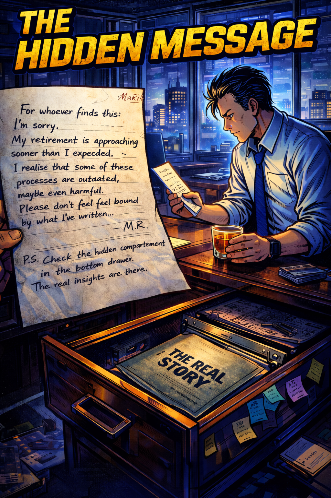
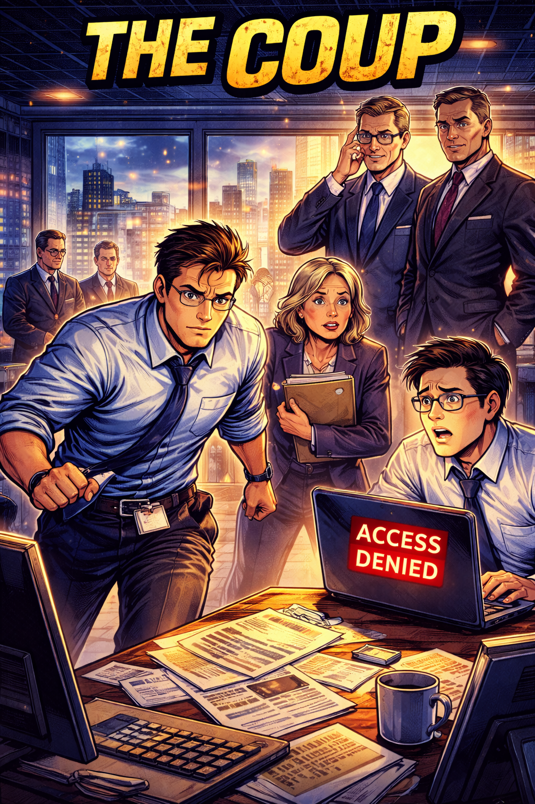
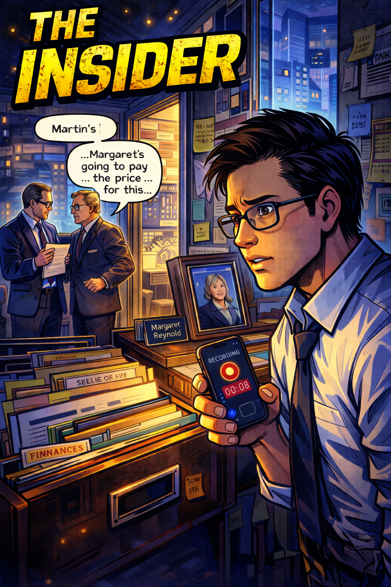
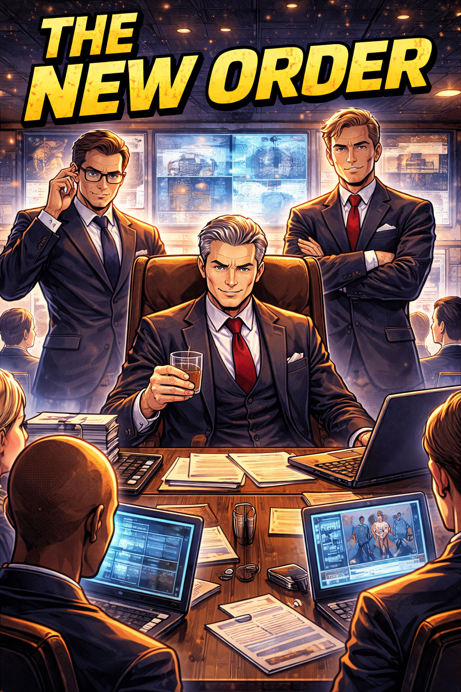

The Legacy Binder
The security guard's keycard beeped twice before Martin's office door clicked open. At 6:47 AM, the executive floor was eerily quiet, fluorescent lights humming their mechanical tune above empty cubicles. Martin had arrived early on purpose - he wanted his first morning as COO to be private.
But the leather binder sitting in the middle of his mahogany desk suggested someone else had other plans.
The company crest embossed on the cover caught the dawn light, its gold leaf still pristine despite what appeared to be years of handling. Meridian Dynamics - Excellence Through Innovation, the motto read beneath an eagle clutching a gear. Martin ran his fingers across the raised lettering, feeling the weight of expectation in every ridge.

He'd expected orientation materials, maybe some welcome documents. But this felt different - more like a manual for surviving, not leading.
The brass clasps opened with a satisfying snap, releasing the faint scent of aged leather - expensive binding, the kind reserved for board presentations and annual reports. Inside, the first page bore a handwritten inscription: "For the one who comes after - M.R."
Margaret Reynolds. His predecessor. The woman who'd built this operations division from twelve people to over three hundred before her early retirement six months ago. The woman whose shadow still seemed to occupy every corner of this office.
As Martin flipped through the pages, his initial awe gave way to bewilderment. Every conceivable operational process had been documented with obsessive precision. Flowcharts branched like family trees across full-page spreads, meeting schedules were colour-coded by priority and cross-referenced with stakeholder matrices. There were even scripts - actual words, for conducting team updates, handling customer escalations, and delivering quarterly reviews.
It was simultaneously impressive and suffocating.
But as his coffee grew cold and the sun climbed higher, Martin began noticing the cracks in Margaret's legacy. References to the "Customer Analytics Division", which no longer existed. Detailed procedures for "Project Nexus" - a software platform they'd abandoned in favour of Salesforce. Performance metrics tied to the European market they'd exited due to low market interest. And a conspicuous absence of anything related to compliance, risk reviews, or external oversight.
What had once been a living blueprint now read like an archaeological record. Fascinating for context, perhaps, but hardly actionable in 2025.
Martin closed the binder with a heavy thud. Outside his window, the city was waking up with coffee shops opening, early commuters hurrying past and cyclists racing through motionless traffic. Life moving forward while he sat there, literally and figuratively, trying to decipher the past.
The Copy-Paste Trap
"The Strategy Hub is sacred," Janet from HR had warned him during his first week.
"Margaret started it in 2018. It's where the real decisions get made."
Martin had nodded politely, but privately wondered if any meeting that required booking the largest conference room for three hours could possibly be efficient. Still, respect for institutional knowledge seemed wise for a new executive. The binder had been explicit: "Weekly Operations Strategy Hub - Non-negotiable. The heartbeat of the organisation."
So on his first Tuesday as COO, Martin found himself standing at the head of a table that could seat twenty-four, watching department heads file in like reluctant soldiers reporting for duty. Arms full of printouts, tablets balanced precariously on coffee cups, the tell-tale rustle of papers that had been hastily stapled together that morning.
Marcus from Supply Chain dropped a three-inch manual on the table with a thud. Sarah from Customer Success followed with her laptop, two phones, and what appeared to be a digital notepad. By the time everyone settled, the mahogany table resembled the aftermath of an office supply explosion.
"Right then," Martin began, consulting Margaret's script. "Let's start with weekly metrics. Marcus, supply chain performance?"
What followed was a masterclass in organisational dysfunction. Marcus read numbers from his printout, while Sarah's laptop showed different figures entirely. Questions about Q3 projections devolved into arguments about Q2 actuals. Action items spawned sub-action items, which spawned sub-sub-action items, creating a fractal pattern of procrastination.

Three hours and forty-seven minutes later, Martin walked back to his office with a migraine and seventeen new "urgent" tasks on his list. Behind him, he could hear department heads grumbling in the lift about "another marathon meeting that accomplished nothing."
This isn't a Strategy Hub, he thought, massaging his temples. It's a waiting room. We're all just waiting for someone to make actual decisions.
That evening, Martin stayed late to review the meeting notes. As he read through the transcript, a disturbing pattern emerged. The same issues had been "discussed" for months and months. The same metrics had been "trending downward" since spring. The same action items kept getting "carried forward to next week."
Margaret's sacred Strategy Hub wasn't solving problems - it was preserving them in concrete.
The Spreadsheet Conspiracy
Determined to make his mark somewhere more measurable, Martin turned his attention to financial reporting. The monthly operations review was coming up, and he wanted to understand the numbers inside and out.
What he discovered made the Strategy Hub look efficient by comparison.
The finance team, led by a soft-spoken analyst named Kevin, presented him with what he called "the dashboard" - three Excel files, each linked to six others, all colour-coded according to a legend that required its own spreadsheet to decode. The main file contained 847 formulas, 23 pivot tables, and enough conditional formatting to make a rainbow jealous.

"So this cell," Kevin explained, pointing to a deceptively simple number in the corner, "pulls from the regional summary, which pulls from the weekly rollups, which pull from individual store reports that get emailed every Monday and Wednesday."
Martin watched Kevin navigate the spreadsheet like a pilot operating a 747 - every click deliberate, every formula sacred. "What happens if someone makes a mistake in one of the source files?"
Kevin's face went pale. "We... we try to catch those during the Wednesday review. But sometimes they slip through. Last month we had to reissue the entire quarterly report because someone in Denver typed '1200' instead of '120' in their weekly submission."
"And how long does this whole process take each month?"
"About sixty hours. Across the team," Kevin said this like it was perfectly reasonable, the way someone might observe that winter follows autumn.
Martin leaned back in his chair, studying the sprawling digital monument to inefficiency.
"Kevin, has anyone ever suggested automating this?"
The room fell silent. Kevin glanced at his team members, who suddenly found their keyboards fascinating. Finally, a junior analyst named Lisa spoke up: "Margaret always said the personal touch was important. That automation couldn't capture the nuances."
The nuances, Martin thought. Like typos and forty-hour weeks spent copying and pasting.
Two weeks later, Martin made his first executive decision that directly contradicted the sacred binder. He called in the IT department and commissioned a real-time dashboard - one that pulled data directly from their various systems, updated automatically, and flagged discrepancies for human review.
The pushback was immediate and vocal. Kevin worried about data integrity. Janet from HR mentioned that Margaret had always been skeptical of "over-relying on technology." Even the CEO, Robert Meridian himself, dropped by Martin's office to ask if he was "moving too fast."
But Martin pressed forward. The pilot dashboard launched on a Thursday. By Friday afternoon, Kevin was calling it "a minor miracle." The monthly report that normally took three days to compile was ready in four hours. Errors dropped to near zero. And best of all, the finance team started leaving the office before 7 PM for the first time in months.
For the first time since finding that leather binder, Martin felt like he was actually leading instead of just maintaining.
The Hidden Message
Success, Martin learned, could be more isolating than failure. The dashboard project had won him allies in finance and IT, but had also marked him as someone willing to challenge Margaret's legacy. Conversations stopped when he entered rooms. Meetings felt more guarded. Even his assistant, Patricia, seemed to weigh her words more carefully.
One evening, long after the cleaning crew had finished their rounds, Martin found himself alone with the binder again. The building's night lighting cast long shadows across his office, and the city sparkled beyond his windows like a circuit board made of stars.
He'd been avoiding the binder lately, viewing it as more of an obstacle than a guide. But tonight, with Scotch warming his chest and the weight of leadership heavy on his shoulders, he felt drawn back to Margaret's obsessive documentation.
As he turned through the familiar pages - the flowcharts now seemed quaint, the meeting schedules almost nostalgic - something unusual happened. A single sheet of paper, different from the rest, fluttered to the floor.
It wasn't a process document or organisational chart. It was a handwritten note on Margaret's personal stationery, the kind with her initials embossed in a small, elegant font at the top. The paper was slightly yellowed, as if it had been tucked away for years.
But what stopped Martin's breath wasn't the age of the paper - it was the handwriting. Shaky, uncertain, completely unlike the confident script he'd seen in Margaret's emails and presentations. As if written by someone whose hands were trembling.
"For whoever finds this: I'm sorry. My retirement is approaching sooner than I expected. I won't have time to train my replacement properly. I tried to document everything, but I know it's not enough. I realise that some of these processes are outdated, maybe even harmful. But I was afraid to change them. Afraid that any mistake would draw scrutiny and damage the company as leadership transitions were under review.
Please don't feel bound by what I've written. These are just the tools I used. The real job is much simpler and much harder: Build a company that is resilient, scalable, and trusted. I hope I've done some small part of that.
I hope you'll do better.
- M.R.
P.S. Check the hidden compartment in the bottom drawer. The real insights are there."
Martin stared at the note for a long time, Scotch forgotten, city lights blurring through sudden moisture in his eyes. Margaret Reynolds - the iron lady of operations, the woman who'd seemingly documented every breath - had seen retirement arrive earlier than expected. Alone. Trying to preserve something while knowing it was already under threat.
He'd been fighting a ghost who'd never wanted to haunt him in the first place.
With shaking hands, Martin pulled open the bottom drawer of his desk. His fingers found a small lever hidden beneath the file rails. A panel slid away, revealing a slim folder marked "The Real Story."
The Hidden Truth
The folder contained just twelve pages, but they rewrote everything Martin thought he knew about Meridian Dynamics.
The first document was a confidential audit from two years ago, commissioned by Margaret herself. It detailed widespread inefficiencies, outdated processes, and what the consultants diplomatically called "institutional resistance to change." The recommended solutions looked remarkably similar to Martin's own instincts: streamline meetings, automate reporting, eliminate redundant approval chains.
But the second document explained why none of those recommendations had been implemented. It was a confidential board memorandum outlining Margaret's battle with the board over strategic direction. Apparently, she'd tried to modernise operations in 2022, only to face a revolt from long-standing department heads. The memo detailed threats of resignation, accusations of "destroying company culture," and ultimately a board vote that forced Margaret to abandon her reforms.

The third document was the most revealing: Margaret's private notes from her final months in the role. Pages of observations about which executives could be trusted with change, which ones would resist it, and which ones were simply too afraid to act. Martin's own name appeared several times, with notations like "Seems adaptable" and "Question: Will he have the courage I lacked?"
But it was the fourth document that changed everything: a detailed financial analysis showing that the company's competitors were outperforming them by 15-30% across every metric that mattered. Customer satisfaction, employee retention, profit margins - all declining while Margaret's rigid processes preserved the illusion of stability.
The binder hadn't been a guide for success. It had been a confession of failure, wrapped in leather and sealed with hope that someone braver would eventually throw it all away.
Martin closed the folder and walked to his window. The city seemed different now - not like a circuit board, but like a living organism, constantly adapting, growing, changing. He thought about Margaret, spending her final months creating an elaborate facade to hide her regrets.
He pulled out his phone and started typing.
The Coup
The email Martin sent at 11:47 PM would later be remembered as the moment everything changed at Meridian Dynamics. It went to his entire senior staff, with a subject line that was both simple and revolutionary: "We're doing things differently."
The message was brief: "Effective immediately, all weekly departmental meetings are suspended pending review. The Friday Strategy Hub is cancelled. Anyone interested in discussing a new approach to operations should meet me in Conference Room B tomorrow at 9 AM. Attendance is optional, but appreciated."
By 8:55 AM, Conference Room B was packed. Even executives who'd seemed most resistant to change had shown up, perhaps out of curiosity, but more likely from concern. Robert Meridian himself sat in the back corner, observing with the careful attention of a CEO who'd learned not to interfere with new executives too quickly.
Martin began by projecting Margaret's hidden audit on the main screen. "I found this in Margaret's private files," he said without preamble. "It's two years old, but the problems it identifies have only become worse."
The room was silent as he walked through the findings. Customer complaints up 23%. Employee turnover in key departments at crisis levels. Competitors gaining market share in every segment that mattered.
"Margaret knew all of this," Martin continued. "She tried to fix it and was blocked. So she created the most comprehensive documentation system I've ever seen, hoping that someone else would eventually have the courage to use it as kindling."
He clicked to the next slide: Margaret's vision statement, pulled from her hidden notes.
"Build a company that is resilient, scalable, and trusted."
"This is what Margaret really wanted. The binder, the processes, the endless meetings - those were just her attempts to hold things together while she fought a battle she couldn't win. But we can win it."
Kevin from Finance raised his hand tentatively. "What are you proposing?"
Martin smiled. "I'm proposing we honour Margaret's real legacy - by ignoring everything she officially left us."
The Resistance
The revolution began quietly. Martin's first act was to eliminate the Friday Strategy Hub entirely, replacing it with brief, focused check-ins conducted via the automated dashboard. Department heads who'd grown accustomed to three-hour information dumps suddenly found themselves with Friday afternoons free for actual work.
The reaction was swift and predictable. Janet from HR scheduled a meeting with Robert Meridian to discuss "concerning changes to established procedures." Marcus from Supply Chain circulated a memo about "the importance of institutional knowledge." Even some board members began asking pointed questions about Martin's "aggressive" approach.
But something interesting happened as the dust settled: results improved. Customer response times dropped from 48 hours to 6 hours when the approval chain was streamlined. Employee satisfaction scores jumped 15 points in two months. The monthly financial reports that had consumed Kevin's life were now generated automatically every morning, freeing his team to actually analyse trends instead of just compiling data.

Most surprisingly, Margaret's old allies began defecting. Sarah from Customer Success admitted that she'd "never actually thought the Strategy Hubs were productive." Even Marcus confessed that he'd spent most of those Friday meetings playing solitaire on his phone.
But Martin's biggest challenge wasn't the open resistance - it was the subtle sabotage. Reports would mysteriously disappear from shared drives. "System glitches" would corrupt important presentations. Key stakeholders would suddenly become unavailable for crucial meetings.
It took Martin three weeks to realise that someone was actively working against him, and it took him another week to figure out who.
The Insider
The breakthrough came from an unexpected source: Patricia, his assistant, who'd been quietly documenting the strange patterns of technical failures and scheduling conflicts that seemed to follow Martin's initiatives.
"Martin," she said during one of their morning briefings, "I think someone's been accessing your calendar and meeting notes. The security logs show activity on your accounts at odd hours, always from Executive Terminal 7."
Martin checked the building directory. Terminal 7 was assigned to the Chief Financial Officer, Thomas Webb - Margaret's old mentor and the most vocal defender of "traditional approaches" to operations management.
The confrontation came sooner than Martin expected. That afternoon, Webb appeared in his office unannounced, closing the door behind him with deliberate care.
"I think we need to have a conversation," Webb said, settling into the chair across from Martin's desk with the confidence of someone who'd held power for decades.
"About your sabotage campaign?" Martin asked directly.
Webb didn't deny it. "About your reckless destruction of everything Margaret built. Do you have any idea what this company was like before she brought structure to it? The chaos, the waste, the complete lack of accountability?"
"I've seen the numbers, Thomas. The real numbers. From Margaret's own audit."
Webb's face darkened. "Margaret was brilliant, but she lost perspective in her final months. The board's scrutiny affected her judgment. She became obsessed with change for change's sake, forgetting that stability has its own value."
"So you decided to undermine her successor rather than have an honest conversation about strategy?"
"I decided to protect this company from another ambitious executive who thinks disruption equals progress." Webb leaned forward, his voice dropping to barely above a whisper.
"Here's what you don't understand, Martin. I've seen five COOs come and go. They all think they're going to revolutionise everything. Most burn out within two years. The ones who last learn to work within the system."
Martin felt a chill that had nothing to do with the office temperature. "Are you threatening me?"
Webb stood up, smoothing his tie. "I'm educating you. Margaret's processes exist because they work. Your little automation projects are impressive, but they don't address the fundamental challenge of managing human beings who resist change. The Strategy Hubs weren't about information - they were about control. Without them, you're just another manager hoping people will follow orders."
After Webb left, Martin sat alone in the gathering dusk, wondering if the CFO might be right. Was he confusing motion with progress? Had Margaret's systems evolved for reasons he didn't fully understand?
But then he remembered the hidden folder, the confession of a leader who'd run out of time as the timetable tightened around her. Margaret hadn't created those processes because they worked - she'd created them because she'd been afraid to admit they didn't.
The Alliance
Martin's response to Webb's challenge was characteristically direct - he called a meeting with Robert Meridian and laid everything on the table. The hidden audit, Margaret's real notes, Webb's sabotage campaign, and his own vision for the company's future.
Meridian listened without interruption, occasionally taking notes on a leather portfolio that probably cost more than most employees' monthly salaries. When Martin finished, the CEO was quiet for a long time, staring out the window at the city that bore his family's name.
"Margaret came to see me six months before she retired," Meridian finally said. "She wanted to discuss succession planning. Not the official process - she knew that was mostly theatre. She wanted to talk about what kind of person could actually change this place."
"What did she say?"
"She said she'd spent fifteen years building systems to prevent mistakes, but had accidentally created systems that prevented progress. She said her successor would need to be someone who could tell the difference between wisdom and habit." Meridian turned back to Martin. "She recommended you for this role, you know. Specifically."
Martin felt something shift in his chest - a loosening of tension he hadn't realised he'd been carrying. "So you'll support the changes?"
"I'll support results. Your dashboard project saved us $200,000 in the first quarter alone. Your streamlined customer service process has improved our Online Review Score by twelve points. Webb's 'traditional approaches' have been costing us market share for three years."

Meridian closed his portfolio with a decisive snap. "But I need you to understand something. Thomas Webb isn't vindictive. He's scared. This company has been his life's work, and he genuinely believes that rapid change could destroy it."
"So what do you suggest?"
Meridian smiled - the first genuinely warm expression Martin had seen from him. "I suggest you stop trying to defeat him and start trying to convert him. Webb knows this company better than anyone. If you can get him on your side, the rest of the organisation will follow."
That evening, Martin sent Webb a simple email: "I'd like to buy you dinner. I think we need to start again."
The Convert
The dinner took place at Webb's choice of restaurant - a classic French restaurant where the servers wore ties and a formidably intimidating wine list was left on the table. Martin arrived expecting a formal negotiation and found instead something more like a therapy session.
"I joined this company thirty-two years ago," Webb began, after they'd ordered. "Straight out of business school, full of theories about efficiency and optimisation. You know what my first boss told me?"
Martin shook his head.
"He said, 'Theories are fine, but people are messy. Your job isn't to create perfect systems. It's to create systems that work with imperfect humans.'"
Over the next two hours, Webb told the story of Meridian Dynamics from the inside. The failed merger attempts, the market crashes that nearly bankrupted them, the regulatory changes that made half their processes obsolete overnight. Through it all, Margaret's methodical documentation had been their anchor - not because it was efficient, but because it was reliable.

"You have to understand," Webb continued, his second glass of wine having loosened some of his corporate reserve, "Margaret didn't create those processes to be optimal. She created them to be bulletproof. After the 2008 crisis, when we laid off thirty percent of our workforce, she became obsessed with preventing any scenario that could put us at risk again."
"But that same obsession was making us uncompetitive," Martin pointed out gently.
Webb nodded slowly. "I know. I've realised that for years. But knowing something intellectually and being ready to act on it emotionally - those are different things entirely."
The breakthrough came when Martin shared Margaret's hidden note - the trembling handwriting, the admission of fear, the hope that someone braver would eventually do what she couldn't. Webb read it twice, his expression cycling through surprise, sadness, and something that looked like relief.
"She never told me how serious the situation had become," Webb said quietly. "Not directly. I knew there were issues, but I thought they were manageable."
"She didn't want pity," Martin said. "She wanted her successor to succeed where she felt she'd failed."
Webb folded the note carefully and handed it back. "What do you need from me?"
"I need your institutional knowledge, but aimed at progress rather than preservation. I need you to help me identify which processes are genuinely valuable and which ones are just habits wearing the costume of tradition."
Webb smiled - a real smile, not the careful corporate expression Martin had seen in meetings. "You know, I've been waiting three years for someone to ask me that question."
The New Order
The transformation that followed was remarkable not for its speed, but for its sustainability. Instead of sweeping away Margaret's legacy wholesale, Martin and Webb worked together to distill it down to its essential elements: thorough documentation, careful risk assessment, and respect for institutional knowledge.
But they rebuilt everything else from scratch.
The Friday Strategy Hubs became monthly strategic sessions with rotating leadership and specific decision-making authority. The maze of spreadsheets evolved into an integrated business intelligence platform that provided real-time insights without requiring human maintenance. Most importantly, they instituted what they called "legacy reviews" - quarterly assessments of every major process to determine whether it was still serving its intended purpose.
The resistance that Martin had expected never fully materialised. Partly because Webb's endorsement carried enormous weight with the old guard, but mostly because the results spoke for themselves. Employee engagement scores reached all-time highs. Customer satisfaction improved steadily. Even the stock price began reflecting the company's renewed efficiency.
But Martin's proudest achievement was more personal; he'd kept Margaret's original vision intact while abandoning her methods entirely. The company was becoming more resilient through flexibility instead of rigidity, more scalable through automation instead of documentation, more trusted through transparency instead of control.
Six months after finding the hidden folder, Martin placed a new item in his desk drawer - a single sheet of paper with his own handwritten note for his eventual successor. It read simply: "Question everything, but preserve the purpose. Change is the only constant, and values are the only anchor."
Epilogue: The Living Legacy
On the anniversary of his first day as COO, Martin arrived early again to find something unexpected on his desk. Not a leather binder this time, but a small plant in a hand-thrown ceramic pot. The note attached was from Webb:
"For growing something new from old roots."
As Martin watered the plant - a hardy Moon Cactus that would thrive with minimal attention - he reflected on how thoroughly his understanding of leadership had evolved. He'd begun his tenure looking for instructions to follow, and had discovered instead a responsibility to choose which instructions were worth keeping.

Margaret's binder still sat in his bookshelf, but he rarely consulted it anymore. Not because it lacked value, but because he'd internalised its most important lesson:
The real work of leadership isn't following processes or even creating them. It's knowing when to preserve, when to adapt, and when to start over entirely.
Outside his window, the city continued its eternal dance of construction and renewal, old buildings making way for new ones, while the fundamental infrastructure remained intact. Martin smiled, understanding finally that he and Margaret had been working toward the same goal all along - they'd just needed different tools to get there.
The legacy wasn't in the binder but in the company that would outlast them both.